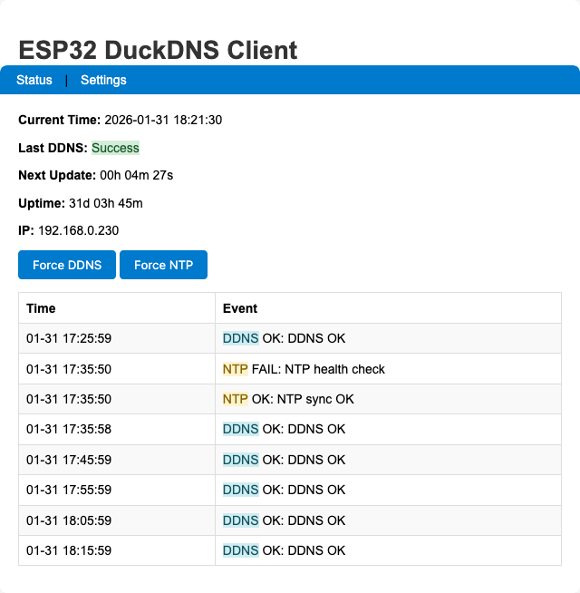

ESP32 DuckDNS Client
Standalone Dynamic DNS client for DuckDNS.org

Standalone DDNS client for DuckDNS.org running on an ESP32 microcontroller — no cloud service, no router dependency.
Overview
This project keeps your DuckDNS domain pointed at your home’s dynamic IP address using an ESP32 as a dedicated, always-on device. Two firmware flavours are available:
Arduino Sketch
Full-featured firmware with web UI, EEPROM persistence, NTP sync, and a JSON API. Runs standalone — no Home Assistant required.
firmware/esp32duckdns.ino
ESPHome YAML
Minimal configuration for Home Assistant users. Exposes entities to HA for dashboard control and logging.
firmware/esp32_ESPHome.yaml
Getting Started
Hardware
Any ESP32 development board works. GPIO 2 is used for status LED output.
Software & Libraries
Requires Arduino IDE with the ESP32 board support package installed.
Install via Arduino Library Manager (Sketch › Include Library › Manage Libraries…):
| Library | Author |
|---|---|
WiFiManager |
tzapu |
Ticker |
sstaub |
Flashing
- Open
firmware/esp32duckdns.inoin Arduino IDE Tools › Board→ select your ESP32 boardTools › Port→ select the correct COM port- Click Upload
- Open Serial Monitor at 115200 baud
First-Time Setup
WiFi Configuration
On first boot the ESP32 starts a captive portal:
- Connect to the WiFi network
ESP32-DuckDNSfrom any device - The captive portal opens automatically (or navigate to
192.168.4.1) - Click Configure WiFi, select your network, enter the password
- Click Save — the device reboots and connects
Device Configuration
After connecting, find the device on your network:
- Router admin page: look for hostname
testduckXXX(whereXXX= Device ID) - Serial monitor shows the assigned IP on boot
Open the IP in a browser → click Settings → log in with:
| Field | Default |
|---|---|
| Username | user |
| Password | pass |
Configure on the settings page:
- DuckDNS Domain and Token
- Update Interval (minutes)
- NTP Server (optional; falls back to built-in pool)
- Persistent Logging (EEPROM ring buffer, 20 entries)
- Device ID (0–999; sets hostname
testduckNNN)
Click Save Settings — device reboots and starts updating.
Web Interface

Shows current IP, last update time, next update countdown, NTP sync status, WiFi RSSI, and the in-memory log ring.


Basic Auth protected (user / pass by default — change ADMIN_USERNAME / ADMIN_PASSWORD in the sketch before flashing).
GET /api/status — no authentication required.

{
"status": "success",
"last_update": 1754857330,
"next_update": 458,
"ip": "192.168.0.7",
"rssi": -54,
"uptime": 142,
"time_synced": true,
"ntp_attempts": 1,
"ntp_last_sync": 23000,
"persistent_logging": true,
"log": [
{
"time": 1754857211,
"local_time": 21345,
"status": "success",
"type": "SYS",
"timestamp_valid": true,
"error": "Web server started on port 80"
},
{
"time": 1754857330,
"local_time": 140123,
"status": "success",
"type": "DDNS",
"timestamp_valid": true,
"error": "DDNS update successful"
}
]
}Architecture
EEPROM Layout
| Offset | Content |
|---|---|
0 |
ddnsConfig struct (~128 bytes), init marker 0x10 |
128 |
Persistent log count (int) + PersistentLogEntry[20] ring |
- EEPROM capacity computed at runtime in
ddnsEEPROMinit()and stored ing_eepromCapacity - Writes are bounds-checked; if computed requirements exceed safe cap, persistent logging is disabled with a warning
- Commits are batched every 30 s via
g_pendingEEPROMCommit; DDNS failures trigger an immediate commit
Logging
| Buffer | Location | Size |
|---|---|---|
| In-memory ring | RAM | 8 entries |
| Persistent ring | EEPROM | 20 entries (optional) |
Logs created before NTP sync have timestamp_valid=false. After sync, updatePendingTimestamps() backfills them using the millis() delta.
NTP
- Tries
ddnsConfiguration.ntpServerfirst, then round-robinsntpServers[] - Health check runs every 30 minutes via
ntp_health_check_timer - If NTP fails at boot, system proceeds after ~2 min and retries via health checks
Web Endpoints
| Route | Auth | Action |
|---|---|---|
/ |
None | Status page |
/settings |
Basic Auth | GET ?save=1 saves config + reboots |
/forcesync |
None | Triggers DDNS update → 302 / |
/forcentp |
None | Triggers NTP sync → 302 / |
/api/status |
None | JSON status blob |
LED Status
| Pattern | Meaning |
|---|---|
| Fast blink | WiFiManager AP mode (config portal active) |
| Slow blink | WiFi connecting |
| Steady on | WiFi connected |
| Blink on failure | DDNS update failed (until next success) |
Security
The default credentials are user / pass. Change ADMIN_USERNAME and ADMIN_PASSWORD in the sketch before flashing to a production device.
- Settings page is protected with HTTP Basic Auth
- HTTPS to DuckDNS uses
setInsecure()(no cert validation). For strict TLS, add certificate pinning toWiFiClientSecure
Home Assistant Integration
The ESPHome variant (firmware/esp32_ESPHome.yaml) exposes HA entities that replace standalone features:
| Entity type | Purpose |
|---|---|
text / number |
Runtime config (domain, token, interval) — editable from HA dashboard, persisted in NVS flash |
sensor |
Last update status, RSSI, uptime, free heap → HA History / Logbook |
button |
Force DDNS update from HA |
time |
NTP via HA platform (syncs from HA) |
secrets.yaml is gitignored. It lives at /config/esphome/secrets.yaml on the HA host and must be edited manually on the device — never overwrite it via scp or SSH pipe.
Key Constants
| Constant | Value | Notes |
|---|---|---|
EEPROM_SIZE |
512 |
Base; actual capacity computed at runtime |
DDNS_LOG_SIZE |
8 |
RAM log ring entries |
PERSISTENT_LOG_SIZE |
20 |
EEPROM ring entries |
MIN_FREE_HEAP |
8192 |
Triggers ESP.restart() on memory pressure |
NTP_TIMEZONE |
UK (GMT0BST,…) |
Change for other regions |
Troubleshooting
- NTP fails at boot
- System proceeds after ~2 minutes and retries every 30 min via health checks.
- DuckDNS not updating
- Verify domain and token on the Settings page. Check Serial Monitor for error logs.
.localhostname not resolving- Use the device’s IP address instead. mDNS may not work on all routers.
- Persistent log disabled after boot
- Computed EEPROM footprint exceeded safe cap — firmware logged a warning and disabled persistent logging to avoid corruption.
Changelog
- Reduced EEPROM data sizes; total EEPROM size = 512 bytes
- Optional persistent logging to EEPROM with batched commits (30s or on critical failure)
- In-memory log ring (8 entries) and timestamp backfill after NTP sync
- NTP multi-server fallback and periodic health checks
- Memory pressure monitoring with defensive restart on very low heap
- Safer string handling and bounded buffers
- Simplified web UI; Basic Auth on Settings page
- Hostname derived from device ID:
testduckNNN - Fixed EEPROM overflow and corruption risk: firmware computes required EEPROM capacity at startup, calls
EEPROM.begin()with a safe size (capped), tracksg_eepromCapacity, and validates persistent-log write addresses - Fixed timestamp backfill bug:
updatePendingTimestamps()now correctly marks corrected timestamps as valid - Centralized EEPROM commit state and log indexing via shared
g_persistentLogCount - Safer persistent logging fallback: disables with warning if EEPROM requirements exceed safe cap
License
MIT License — see LICENSE.
Adapted from the original ESP8266 DuckDNS client by Davide Gironi (davidegironi.blogspot.com).